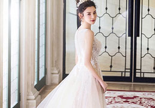
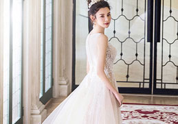

首页: 拍摄基地 ＞ 湖畔公主馆 ＞ 卢森堡长廊
拍摄基地
-
湖畔公主馆－
- 卢森堡长廊
- 星辰水晶教堂
- 圣恩教堂
- 依云湖
- 星光 · 夏朵＋
- 卢森堡长廊
- 星辰水晶教堂
- 圣恩教堂
- 依云湖
- 秘密花园＋
- 卢森堡长廊
- 星辰水晶教堂
- 圣恩教堂
- 依云湖
- 梦幻空间＋
- 卢森堡长廊
- 星辰水晶教堂
- 圣恩教堂
- 依云湖
卢森堡长廊
LUXEMBURG CORRIDOR
-
卢森堡公园(法语: JARDIN DU LUXEMBOURG)是一座处于巴黎第六区，拉丁区中央的公园，于1612 年玛丽.德.美第奇的统治下建成。卢森堡公园面积为224,500平方米，有巨大的梧桐大道与花园、喷泉，以及许多上古智者的雕像,还有皇帝的别宫卢森堡宫(PALAIS DU LUXEMBOURG)，是国会议员的宿舍。
卢森堡公园还与亨利四世有关，但比浮日广场晚些，公园内的宫殿是亨利四世被刺后为玛丽皇后建造的 不知道这位皇太后会不会也像中国的那些年轻的太后们一样对于权力很感兴趣，只是看到一个略大于街 心花园的树丛、塑像、有棱角的小径、散落在各个角落里的座椅组成的公园。
以前读过陈从周的一篇谈中国园林变成公众游览地后的接待困难的文章，内中分析了私家园林和公众园 林区别，今天算是在这儿映证了。整个卢森堡公园向四面八方敞开,园中的道路是平直的，树冠很高增加了视觉的通透性，中央水池和花坛周围有大量的空地。
 
